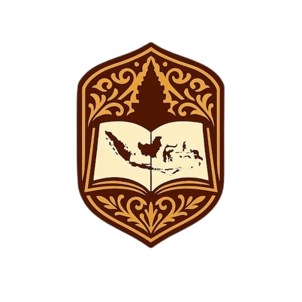

Tahukah kamu Peristiwa Bandung Lautan Api terjadi pada tanggal 23 Maret 1946. Ketika itu kondisi pertahanan dan keamanan setelah Indonesia merdeka belum kembali stabil.
Pada beberapa daerah terjadi pertempuran memperebutkan kembali wilayah kekuasaan sekutu. Saat itu penduduk yang tinggal di Bandung kemudian diungsikan, sementara bangunan-bangunan penting dan rumah dibakar.
Kemudian peristiwa ini disebut juga sebagai Bandung Lautan Api. Pembakaran rumah serta bangunan ini sendiri dilakukan untuk mencegah sekutu serta tentara NICA Belanda menggunakan kota Bandung sebagai markas militer.